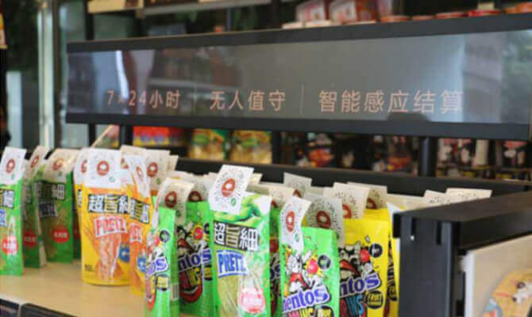
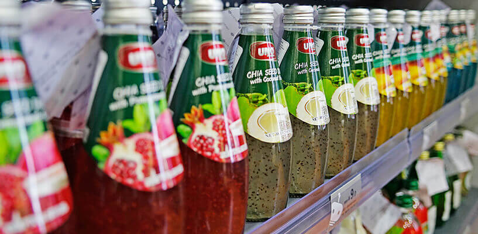
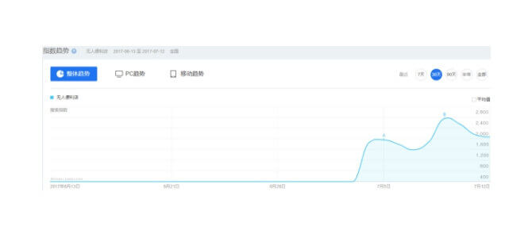

风口上的200天，广州开出Easy Go无人便利店
比起某种程度上“大局已定”的共享单车，无人便利店显然是资本刚刚开辟的新战场。
对已入场的投资人和创业者而言，这个属于“无人”的夏天，来得比预想中更热一些。一种可能是，此前他们大多在某些场合看过Amazon Go那个撩动性极强的演示短片。
短片很惊艳，但谈不上超乎想象。全球范围内持续迭代的生物识别和移动支付技术，已经可以提供足够的技术支撑。
而在中国，在消费升级的背景下，顾客在效率和体验上的新需求，也会催生新的出口。于是，进入2017年，看上去要“重新发明便利店”的Amazon Go，一直在沉默中内测。反而是在中国，资本开足马力，无人便利店纷纷落地。
仅支持微信
大风已经吹到南方。在持续一周的无人便利店热潮中，昨日，广州本地的电视台在新闻中用一种昭告天下的语调，宣布“无人便利店登陆广州”。
这家无人职守的便利店叫Easy Go，首家门店开在越秀区中华广场，那是广州最成熟的商圈之一，日均客流量以数十万计。
新闻显示，Easy Go便利店的SKU达到800+，商品的上货和补货，均通过大数据进行分析，再进行统一配送，仅三个人就可以完成30家门店的日常运营。另外，店内商品通过RFID标签进行识别，顾客以微信小程序“扫码·开门·结算·出门”的方式，完成购物。
值得一提的是，在目前露头的无人便利店中，Easy Go是唯一一家仅支持微信的品牌。

Easy Go便利店联合创始人王牧牧表示，Easy Go于今年春节后开始启动，实际“比风口来得要早”,四月份曾受邀参加腾讯主办的2017中国“互联网+”数字经济峰会，且受到多方关注。她同时透露，目前，中华广场的Easy Go门店处于测试阶段，八月份将会在广州更多核心地段，推出2.0版本的旗舰店，以刷新顾客的消费体验。
从北京到杭州
在广州，能够提供类似体验的，还有F5未来商店。但从视觉观感和操作流程看，它是眼下所有露头的无人便利店中，最像“升级版自动售货机”的一家。

这个比喻，出自某些对无人便利店持悲观态度的行业观察者。F5商店的选址似乎也在印证这个比喻——珠江南岸的广州塔，一个4A级旅游景区，带着一点观光展览的味道，远离密集居民区，远离便利店应有的属性。
尽管如此，F5未来商店还是在风口中，完成A+轮融资。事实上，这一波无人便利店的热潮，正发轫于一条融资信息：今年二月份，北京的便利蜂一起步就在中关村连开五店，凭的就是亿元级别的融资。其时，媒体报道大多瞄准其投资人庄辰超，对无人便利店的商业模式和行业趋势，则持审慎态度。
同一时间，一款名为Take Go的自动结算和信用结算系统在北京发布，背后是蚂蚁金服旗下的芝麻信用，以及亿百科技。零星散见的媒体报道，开始描绘互联网巨头进入便利店的可能性和时间表。
四月份，刘强东发布京东百万便利店计划。六月份，作为传统消费企业翘楚的娃哈哈，公布无人智能零售店计划，上海出现无人便利店缤果盒子，深受高温考验。进入七月，“淘咖啡”在淘宝造物节上亮相，大玩家正式入场。

百度指数上基于“无人便利店”一词的搜索趋势
至此，媒体的风向彻底转变，没人再怀疑风口已经到来。同时，阿里巴巴强势入局，也让杭州有机会在这个夏天取代北京和上海，成为无人便利店的舆论中心。
打造全新经济业态
按照相关从业者的预测，这一波无人便利店带来的革新，远不止购物体验。小而轻快的无人便利店，将彻底改造便利店和顾客的关系，成为新零售业态的重要载体。这种“历史使命”，是街角巷尾的夫妻杂货店和传统便利店，所无法完成的。
也许是基于这种预测，来势汹汹的各家无人便利店，才会在推广中频频使用“颠覆”一词。由此，便衍生出“无人便利店将像当年电商冲击实体商店一样，冲击传统便利店，让收银员下岗”的论调。
而在王牧牧看来，无论“颠覆”还是“下岗”，全都是伪命题——相比北京、上海那些遥遥相望的竞品，Easy Go在自我定位上有巨大的区别。
她表示，参照发达国家的经验和中国的人均收入标准，目前国内的便利店，无论在数量还是密度上，都还有巨大的缺口。“Easy Go要做的不是颠覆，而是一种升级。关于未来，我们首先认为传统便利店和无人便利店能够有机共存，其次希望把Easy Go打造成一种服务于城市社区的信息连接中枢，让它变得智能化、智慧化，从而创造出一种全新的经济业态。”
在炙手可热的无人便利店大讨论中，这可能是目前来自当局者的、最冷静的阐述之一。携风口之势，“被官宣”的Easy Go正与其他玩家一道，慢慢渗入这个国家的经济脉络和日常生活。和所有过往的创业者一样，他们需要足够的谨慎和大胆，才能穿过商业森林中的迷雾，走上真正的“无人”之路。